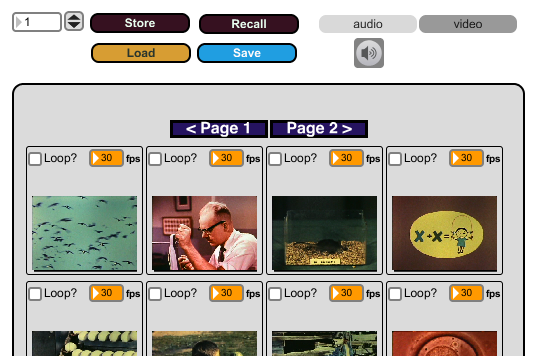

M2S (2010)
click to expand

Media


M2S (Minimalist Multimedia Sampler) is real-time audio and video sampler software intended to be used for live performances. The software allows for the simultaneous mapping of multiple audio and video samples to individual buttons in order to facilitate the synchronization of real-time music and video playback controlled by a single performer.
M2S is a self-contained piece of software which can be downloaded and distributed freely, lowering the barrier of entry for new artists and encouraging experimentation in a live performance setting. It can easily be modified to use any type of input device (computer keyboard, MIDI, OSC, etc.) It is currently still under development and will be migrated to a github repository in the near future.